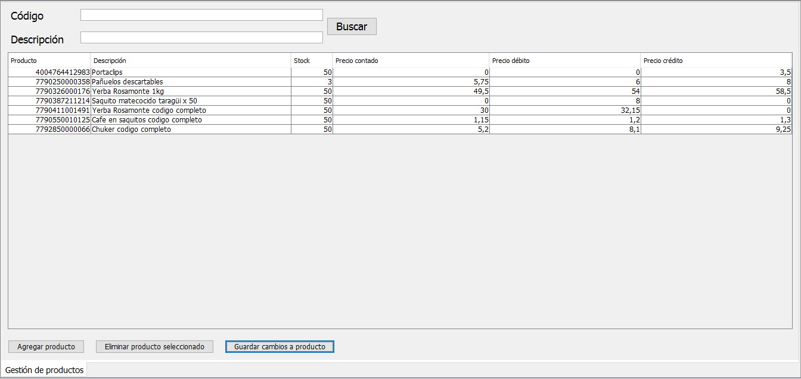
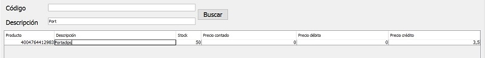
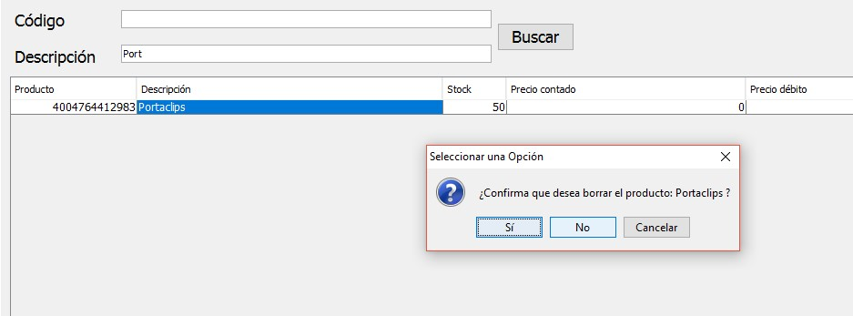
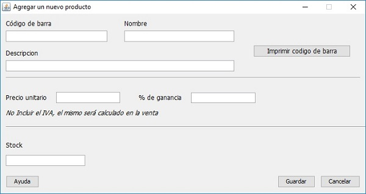

En este modulo usted podra agregar, editar o eliminar los productos disponibles en su negocio. Mediante los campos de búsqueda ubicados en la parte superior podrá búscar los productos deseados mediante su codigo de barra o nombre de descripción.

Una vez encontrado el producto deseado podrá editar sus propiedades (seleccionando el codigo de barra y seguidamente presionando el boton "Editar producto seleccionado"), entre las que se incluye el nombre y descripción del producto, se fecha de vencimiento, precio unitario, porcentaje de ganancia y, finalmente el stock.

Ya editadas la propiedades del producto debera hacer clic en el botón "Guardar cambios a producto" ubicado en la parte inferior, aceptada la confirmación se guardaran los cambios hechos
Si desea eliminar un producto, basta con seleccionarlo con el cursor y hacer clic en "Eliminar producto seleccionado", aceptada la confirmación se eliminará la entrada del producto del sector "Gestión de productos".


Con el boton "Agregar producto" se abrirá una nueva ventana que le permitira crear un nuevo producto y cargar sus propiedades entre las cuales se encuentran codigo de barra, nombre y descripción del producto, fecha de vencimiento, precio unitario, porcentaje de ganancia y stock. Ademas dispone del boton "Imprimir codigo de barra" el cual le permitira guardar una imagen del codigo de barra generado para luego imprimirlo e incorporarlo a los productos en venta, este boton tambien es accesible desde el modulo "Editar producto". Para editar determinado producto, bastará presionar "Editar producto seleccionado" para que se abra la misma ventana que en la alta de porduto y poder editar las propiedades del mismo o acceder para imprimir su respectivo codigo de barra.